Лекция 8: Инструменты цветной ретуши изображений
При ретушировании портретов часто используют инструменты Точечная восстанавливающую кисть и Восстанавливающая кисть. Оба этих инструмента расположены в одной, общей для них группе. Сравнивая эти два инструмента следует сразу сказать о том, что при ретушировании больших областей (татуировок, трещин и царапин на фото) следует применять Восстанавливающую кисть, а если дефект небольшой (родинка, морщинка, точки на фото, небольшой шрам), то рекомендуется применять Точечную восстанавливающую кисть. Действия точечной восстанавливающей кисти аналогичны действиям восстанавливающей кисти, но в отличие от восстанавливающей кисти, для точечной восстанавливающей кисти не требуется указывать точку, которая используется в качестве образца - она сама автоматически выбирает образцы пикселей из области вокруг ретушируемого фрагмента.
Точечная восстанавливающая кисть
Инструмент Точечная восстанавливающая кисть (J) позволяет быстро удалять из фотографий небольшие пятна, родинки, пирсинг или небольшое тату ( рис. 8.1).
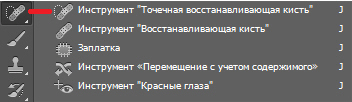Рис. 8.1. Инструмент Точечная восстанавливающая кисть
Рассмотрим пример применения инструмента Точечная восстанавливающая кисть для ретуши родинки или пирсинга ( рис. 8.2).
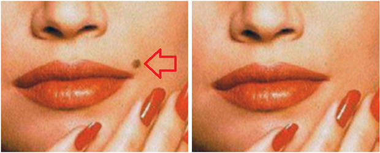 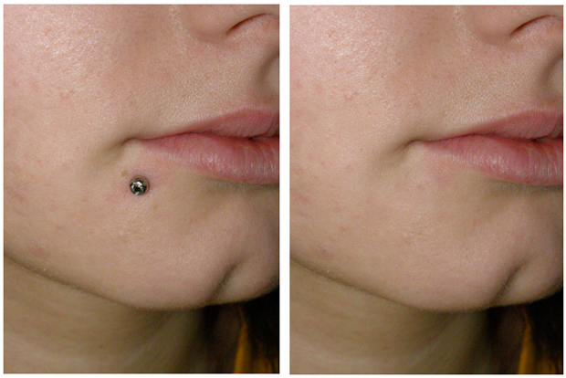Рис. 8.2. Ретушь родинки и пирсинга инструментом Точечная восстанавливающая кисть
Чтобы отретушировать родинку (или пирсинг), активируйте на панели инструментов инструмент Точечная восстанавливающая кисть и на панели атрибутов (свойств) этого инструмента задайте параметры кисти (кисть размером должна быть чуть больше ретушируемой области) - рис. 8.3.
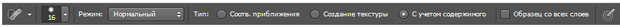Рис. 8.3. Панель свойств инструмента Точечная восстанавливающая кисть
Восстанавливающая кисть
Как и инструмент Штамп, инструмент Восстанавливающая кисть требует указания источника для клонирования (при нажатой клавише Alt) - рис. 8.4.
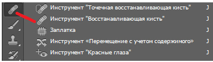Рис. 8.4. Инструмент Восстанавливающая кисть
<Это интеллектуальный (smart) инструмент, иначе говоря, Восстанавливающая кисть позволяет исправлять дефекты изображения на основе соседних областей, делая это "умно", то есть, сопоставляя текстуру, освещенность, прозрачность и затененность пикселей образца с аналогичными параметрами пикселей восстанавливаемого изображения. Давайте в качестве иллюстрации к сказанному активизируем инструмент и удалим на фотографии цветную татуировку ( рис. 8.5).
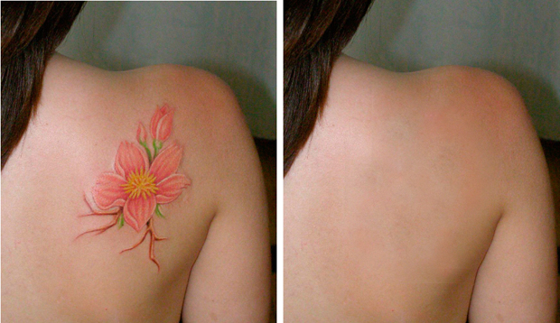Рис. 8.5. При рисовании Восстанавливающей кистью тату удалена
При выполнении данного примера автор выбрал на панели свойств жесткую кисть по размеру идентичную размеру тату, а остальные параметры кисти оставил по умолчанию ( рис. 8.6). На этом рисунке, чем больше ползунок смещен вправо, тем больше размер кисти и ее жесткость.
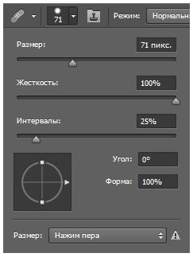Рис. 8.6. Окно настройки параметров инструмента Восстанавливающая кисть
Для удаления тату укажите курсором точку выборки образца изображения (это должен быть хороший участок кожи, без тату), щелкнув ее мышью при нажатой клавише "Alt". Затем щелкните курсором на тату. Проделайте эти манипуляции несколько раз. Посредством переноса участков кожи, соседствующих с тату на место татуировки вы устраните этот дефект.
Инструмент Заплатка
Подобно тому, как существует много видов транспорта (лифт, машина, пароход, самолет…), каждый - для своих целей, так и в Photoshop есть множество инструментов ретуши (штамп, палец, восстанавливающая кисть…), каждый - для своих задач. Инструмент Заплатка весьма похож на восстанавливающую кисть и применяется также для ретуширования сравнительно крупных участков фотографий, но имеет свои особенности. В качестве примера давайте на фотоснимке удалим дату съемки ( рис. 8.7).
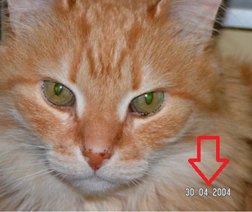Рис. 8.7. Исходное фото для нашей работы
Выберем инструмент Заплатка на панели инструментов, а на панели атрибутов этого инструмента активизируем переключатель Источник - рис. 8.8.
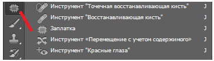 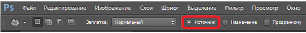Рис. 8.8. Инструмент Заплатка и его Панель свойств
Теперь инструментом Заплатка нарисуйте выделение вокруг части изображения, которую необходимо восстановить. В нашем случае это будет дата съемки ( рис. 8.9).
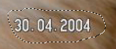Рис. 8.9. Источник указан
Удерживая левую клавишу мыши перетащите выделенную область на новое место (у нас это будет дата съемки) и отпустите клавишу. Командой Выделение-Отменить выделение снимите выделение ( рис. 8.10).
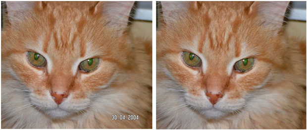Рис. 8.10. Фото до (слева) и после (справа) ретуши